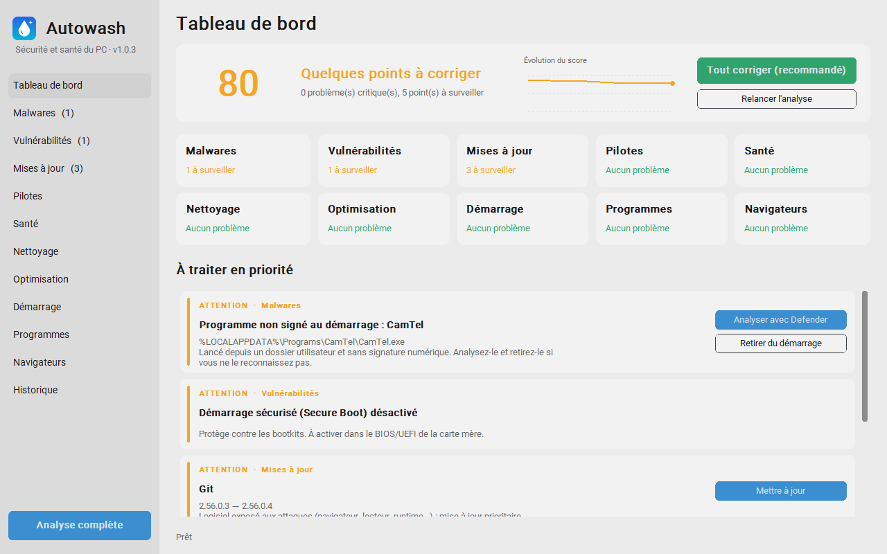

Votre PC Windows, propre et sûr en un clic.
Autowash analyse la sécurité et la santé de votre PC, explique chaque problème en français clair et le corrige pour vous. Gratuit, sans publicité, sans envoi de données.

Fonctionnalités
Tout ce qu'il faut vérifier, au même endroit
Une analyse complète prend moins d'une minute. Chaque problème est expliqué, classé par urgence, et se corrige d'un clic, un par un ou par sélection.
Malwares
Antivirus actif et à jour, menaces détectées par Defender, programmes suspects lancés au démarrage.
Vulnérabilités
Pare-feu, UAC, SMBv1, Bureau à distance, Secure Boot, chiffrement du disque, programmes qui écoutent sur le réseau.
Mises à jour
Windows Update et logiciels obsolètes via winget, avec les plus exposés en priorité. Installation automatique chaque jour en option.
Pilotes
Pilotes proposés par Windows Update et dernier pilote NVIDIA, téléchargé depuis NVIDIA et vérifié avant installation.
Santé
Usure des disques, espace libre, mémoire, plantages et écrans bleus récents, périphériques en erreur, batterie.
Nettoyage
Fichiers temporaires, restes de programmes désinstallés, dossiers vides, gros fichiers et doublons, ancien Windows.
Optimisation
Moins de publicités et de télémétrie, jeux plus fluides, et rétablit les protections coupées par les « optimiseurs ».
Démarrage
Ce qui se lance avec Windows, avec la mémoire et le processeur réellement consommés. Activer ou désactiver en un clic.
Programmes
Tous les logiciels installés, et les bloatwares classés par priorité. Désinstallation d'un ou plusieurs programmes à la fois.
Navigateurs
Extensions installées hors des stores ou avec accès à tous les sites, mots de passe enregistrés, caches à vider.
Sécurité
Conçu pour ne rien casser
Corriger, c'est bien. Pouvoir revenir en arrière, c'est mieux.
Tout s'annule
Chaque action est inscrite dans l'Historique avec un bouton Annuler : réglage, démarrage, pare-feu, fichiers.
La corbeille, jamais l'effacement
Les fichiers nettoyés partent dans la corbeille de Windows et se restaurent depuis Autowash.
Points de restauration
Créés avant chaque changement important, et supprimés au bout de 7 jours pour ne pas encombrer le disque.
Rien ne sort de votre PC
Autowash s'appuie sur les outils de Windows (Defender, Windows Update, winget) : pas de compte, pas de télémétrie.
Installer
Prêt en une minute
Un seul fichier à télécharger, rien d'autre à installer.
Télécharger
Récupérez l'installeur Autowash-Setup.exe.
Installer
Lancez-le : Autowash s'installe pour votre compte, avec ses raccourcis sur le Bureau et dans le menu Démarrer.
Lancer
Ouvrez Autowash et acceptez les droits administrateur, nécessaires pour la plupart des corrections.
Windows affiche « Windows a protégé votre ordinateur » ? C'est normal pour un logiciel non signé : cliquez sur Informations complémentaires, puis Exécuter quand même. Pour désinstaller : Paramètres › Applications installées › Autowash.
Se met à jour tout seul
Les nouvelles versions sont téléchargées en arrière-plan, vérifiées (empreinte SHA-256) puis installées à la fermeture d'Autowash.